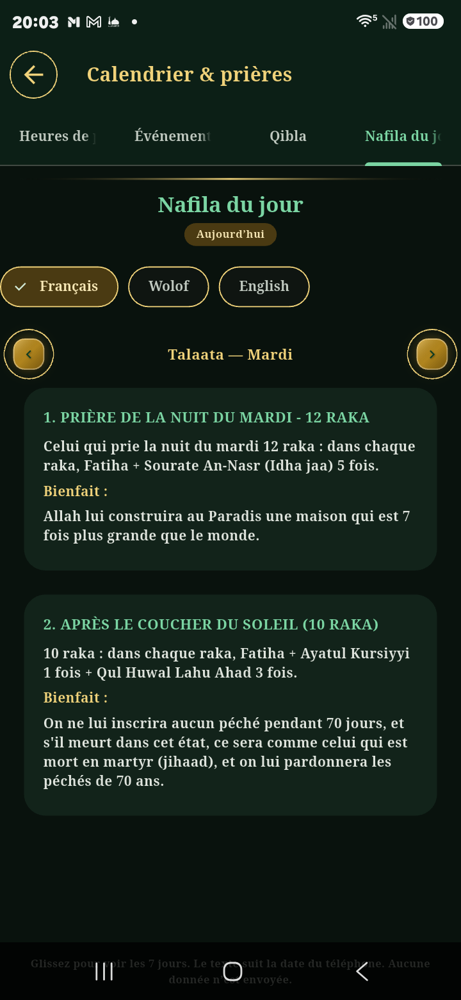

Accès direct aux rubriques du site
Toutes les sections présentées sur cette page

Bibliothèque et fiche du livre
La bibliothèque de khassaïdes reste la pièce centrale du site : les titres sont classés par langue puis par ordre alphabétique, avec un lien direct vers chaque PDF hébergé sur le R2 de l’application.
- Recherche par nom et saisie vocale dans l’application.
- Filtres par favoris, téléchargements et langue.
- Lecture intégrée des PDF, sans passer par un site tiers.


Heures de prière et widget
Les horaires sont calculés hors ligne pour la ville choisie manuellement, sans GPS. Le compte à rebours suit l’heure du téléphone ; le widget affiche les cinq prières et la prochaine.
- Appel personnel désactivé au départ, activé seulement volontairement.
- Bouton manuel « Écouter l’appel » conservé dans l’application.

Événements et compte à rebours
Grand Magal, Ramadan et autres repères mourides sont affichés sans connexion. Le réglage « Sénégal / Touba (+1 jour) » ne décale que les événements religieux.

Qibla sans GPS
La direction est calculée depuis la ville choisie manuellement. La boussole est vivante quand les capteurs le permettent ; sinon, un repère statique prend le relais.
- Badge « Nord magnétique » pour éviter toute confusion.
- Précision indiquée : Bonne, Moyenne, Faible ou Indisponible.

Nafilas du Ramadan — 30 nuits
Les nuits sont présentées en texte seul, avec les invocations, leurs répétitions et leurs bienfaits, dans la même sobriété que l’application : police Amiri et filets dorés.

Nafila du jour — 7 fiches
Les fiches de la semaine sont lues en français, wolof et anglais. L’application ouvre le jour du téléphone avec le badge « Aujourd’hui ».

99 Noms d’Allah
Chaque Nom est affiché en arabe, en transcription latine et en français, avec son dhikr lorsqu’il figure dans l’application.

XAM YOONWI — 30 chapitres
Vie de Serigne Touba, enseignements, écrits, Touba, Grand Magal, Khalifes, famille et disciples : trente chapitres lisibles hors ligne, avec portraits recadrés depuis les planches.

Mes PDF téléchargés
Les fichiers enregistrés restent accessibles dans l’application et s’ouvrent dans le lecteur intégré, avec les proportions des pages conservées.
- Aucun historique n’est envoyé : tout reste sur l’appareil.

Tous les accès
Le bouton flottant 3D ouvre un menu unique vers la bonne fenêtre, sans modifier les barres du haut et du bas de l’application.
- Les quatre rubriques du bas sont : Bibliothèque, Nafilas R, XAM YOONWI, 99 Noms.
À propos et partage
Application réalisée par Mouhamadou Falilou Seye. Elle est gratuite, sans publicité, sans analytique et sans paiement dans l’application.
Des pages réelles, pas une simple description
Les aperçus ci-dessus sont des captures prises dans l’application. Ils renvoient aux pages qui existent réellement sur le site : bibliothèque de khassaïdes, prières, nafilas, nafila du jour, 99 Noms et XAM YOONWI. Aucun lecteur interactif ni fonction inventée n’est ajouté.
Captures prises directement dans l’application, au format 720 × 1560. Cliquez sur une image pour l’ouvrir en grand.